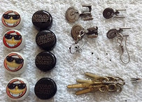

What is a "bead stash?" A bead stash, depending on who you ask (and if they are honest), is the nice little hoard of beads you bought and have hidden somewhere. Every crafter, especially beaders, is a hoarder to some extent. Beaders are like dragons: shiny little things attract their attention very quickly so you can become very good friends with a beader. Friends, significant others or even your spouse will happily help you indulge in feeding your addiction to these shiny pretty things. They will even locate the latest bead store before you find out about it! Many beaders are familiar with beads they find at local craft stores like Michael's; some shop at stores that specialize and sell only beads. But most beaders build a good bead stash. A bead stash should consist of seed beads of various sizes, and beads of different shapes, sizes (i.e., metal, chips, cubes, round, squared, heshi, tubular and novelty). Learn your beads before you buy. Mistakes are expensive.
Excellent reference sources are essential in gaining bead knowledge. The Beaders' Companion (Expanded and Updated) by Judith Durant is an excellent source. This manual contains clear pictures and diagrams of various beading stitches, done step-by-step; needle sizes and their uses; thread types, conditioners and bees-wax and their uses in beading, recommendations for the proper tools to use in projects; and graph paper for beading projects among other things. It also contains information on semiprecious stone beads (amethyst, onyx, coral, etc); new products, off-loom weaving; knitting, crochet and tatting with beads. Fire Mountain Gems has a Jewelry Maker's Library and tutorial series; they also produced the Beader's Handbook in pdf format for free download. It is full of diagrams on bead sizes, charts on the number of beads for projects and a good source of information. Try to join a beading group. Facebook, Twitter, Tumblr and other social media platforms host beading groups or your local YMCA will have one. Beading kits for beginners are sold on Amazon, Michael's and many web sites. Also, Youtube has videos to learn the technique you choose to do.
Novelty beads Other reference magazines include Bead and Button Magazine which contains beading diagrams and instructions; Bead Style Magazine; Bead and Jewellery Magazine and Beadwork Magazine. Many of these sites also have links to free patterns and tutorials to download. Online sites such as Beading Daily (affiliated with Interweave) provide tutorials as well. Lastly, look for beading groups or bead societies in your local area through the internet or beading magazines.
A rule to remember about Beading: it can be a creative, relaxing hobby and sometimes provides extra cash if you decide to sell your product, but first and foremost, it can be an EXPENSIVE hobby. Leave the credit card at home unless you can resist over-spending!
Most of us are familiar with crochet and knitting but tatting is a form of lacemaking and resembles crochet using very fine thread. There are two different methods of tatting: one using a needle, the other using a shuttle. Shuttles come with 1 or 2 bobbins, or have a center post with a hole in the center to wind the yarn around. Shuttles can be made of metal, wood or plastic with or without a point. Amazon sells Historical Folk Toys First Tatting kit to learn the basic shuttle skills and this kit is also sold at the Historical Williamsburg, VA site. For both shuttle and needle tatting, watch Youtube videos. There are also organizations that support tatting as a craft. Tatters Across Time has a program for beginners to masters and you can request a mentor to assist you. The apprentice phase has 6 designs to do. Other tatting groups are international and are listed on Links.
Kumihimo is a form of Japanese braiding that incorporates beading as well. Amazon's Starter Kit includes the KumiLoom Disk, bobbins, booklet and necklace cord in its kit.